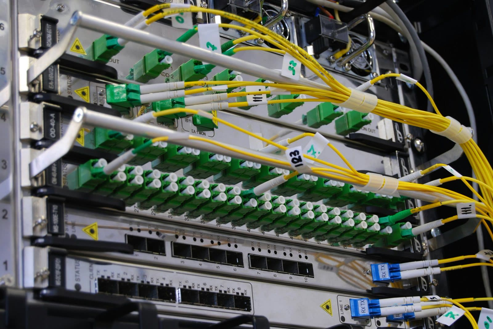

Manual rack audits feel safe because they are familiar, but they break down quickly once teams operate across many rows, rooms, and sites. This piece outlines the common failure modes that make spreadsheet-first rack validation hard to trust at scale.
- Manual audits introduce delay before accuracy is achieved.
- Human transcription creates inconsistent records and missed exceptions.
- Teams need repeatable capture, not one-time cleanup efforts.
Manual audits are snapshots with a long lag.
By the time a team completes a manual audit, reviews notes, fixes labels, and updates the inventory system, the environment has usually changed again. That means the record is already aging before it is even approved as complete.
That is how inventory validation becomes scalable instead of heroic.
The weak point is consistency.
Different engineers capture different levels of detail. Some log serial numbers. Some stop at device class. Some note cables. Others focus only on occupied rack units. This inconsistency makes cross-site comparison difficult and turns every audit cycle into a fresh data-cleaning project.

Standardized evidence beats handwritten interpretation.
A modern audit workflow starts from structured capture and repeatable evidence. Teams should be able to inspect the same rack later and arrive at the same core result. That is how inventory validation becomes scalable instead of heroic.